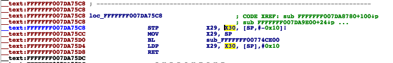
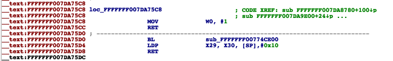
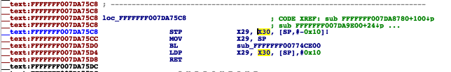
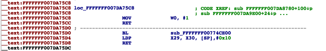

Making custom ramdisk
Unfortunately there is no way of restoring our inverted image if disk0 is mounted, so we have to use a custom ramdisk.
Patching AMFI
We need to patch amfi in kernel to make the ramdisk load custom binaries. Unpack the kernelcache:
img4 -i kernelcache.* -o kcache.raw
Manually Patching
Load kernelcache in IDA (or your disassembler) as ARM Little Endian. Search "entitlements too small" string and jump to its Data XREF. We need to look for next MOV X0,X24 instruction and double click on the next BL (7DA75C8 in this case).

Change STP X29,X30 and MOV X29,SP instructions to MOV W0,#1 and RET instructions

Apply patches to kernelcache.
We need to look for next MOV X0,X24 instruction and double click on the next BL (7DA75C8 in this case).

Change STP X29,X30 and MOV X29,SP instructions to MOV W0,#1 and RET instructions

Apply patches to kernelcache.
Automatically Patching
To simplify dual booting process I wrote an utility based on xerub's patchfinder64 that will automatically patch the kernel:Kernel64Patcher kcache.raw kcache.patched 12 -a
 Note: 12 is the iOS version in the example. The program supports 10 through 13.
First, convert an shsh2 file for your device (shsh version does not have to match iBoot version, any can be used) to raw IM4M with img4tool. This file will be critical for signing components later on:
Note: 12 is the iOS version in the example. The program supports 10 through 13.
First, convert an shsh2 file for your device (shsh version does not have to match iBoot version, any can be used) to raw IM4M with img4tool. This file will be critical for signing components later on:
img4tool -e -s *.shsh2 -m IM4M
With the latest commit of img4tool, a patched kernel can now be compressed properly:img4tool -c kernelcache.img4 -s *.shsh2 -t rkrn kcache.patched --compression bvx2
(For A9 and under, replace bvx2 with complzss.)Adding needed binaries
The custom ramdisk has to execute apfs_invert, so we need to make changes to it's filesystem so it will execute our custom binary.Unpack original ramdisk into raw dmg:
img4 -i xxx.xxx.xxx.dmg -o ramdisk.dmg
And mount it:hdiutil attach ramdisk.dmg
Compile restored-hax (thanks to @b1n4r1b01) and sign it using ldid (iOS 10) or ldid2 (iOS 11+):xcrun -sdk iphoneos clang -arch arm64 restored-hax.c -o restored_hax
ldid(2) -S restored_hax
Note: don't forget to change disk0s1s3 in source code, if new system is a different partition. Rename original restored_external:mv /Volumes/ramdisk_name/usr/local/bin/restored_external /Volumes/ramdisk_name/usr/local/bin/restored_external_bak
And replace it with the compiled binary:cp -a restored_hax /Volumes/ramdisk_name/usr/local/bin/restored_external
Now pack ramdisk into img4:img4 -i ramdisk.dmg -o ramdisk -M IM4M -A -T rdsk
Please refer to First Boot for more booting instructions.If you did everything correctly ramdisk should boot and run apfs_invert (don’t forget to send trustcache on iOS 12+).